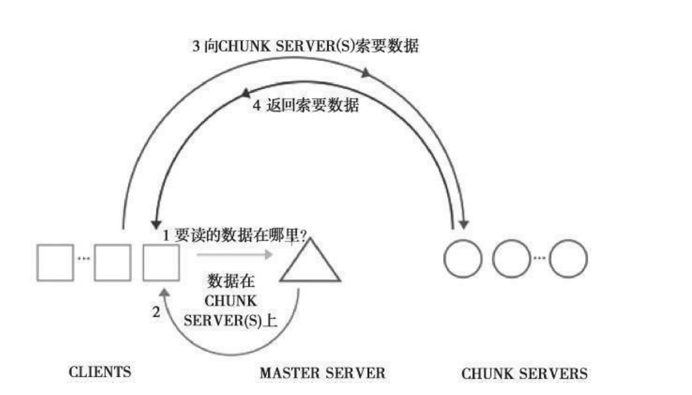
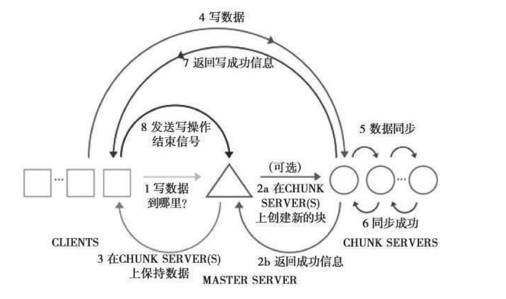

Contents
02.分布式存储系统MFS¶
Linux下的开源存储系统MFS，它是由波兰人开发的。MFS文件系统能 够实现RAID的功能，不但能够更节约存储成本，而且不逊色于专业的存储系统，更 重要的是它能够实现在线扩展。读者必须明白的一点是，MFS是一种半分布式文件系 统
MFS组成及运行原理图¶
MFS的网络组成有三部分：
MASTER SERVER
CHUNK SERVER和CLIENT，
其中MASTER SERVER只有一个，而CHUNK SERVER和CLIENT可以有多个。
MFS读进程和写进程的工作机制分别如图:
MFS读进程的工作机制

MFS写进程的工作机制
可以清楚地看出MFS在写入数据时的内部运作过程。

MFS文件系统¶
MFS文件系统结构
整个文件系统包含4种角色，分别是：
管理服务器—MASTER SERVER
元数据日志服务器—Metalogger
数据存储服务器—CHUNK SERVER
客户端—CLIENT
4种角色作用如下：
管理服务器，有时也称为元数据服务器，负责管理各个数据存储服务器，调度文件读写，回收文件空间以及恢复多节点拷贝。
元数据日志服务器: 负责备份管理服务器的变化日志文件，文件类型为changelog_ml.*.mfs，以便于在管理服务器出问题时接替其进行工作。元数据日
志服务器是mfs1.6以后版本新增的服务，可以把元数据日志保留在管理服务器中，
也可以单独存储在一台服务器中。为保证数据的安全性和可靠性，建议单独用一台
服务器来存放元数据日志。需要注意的是，元数据日志守护进程跟管理服务器在同
一个服务器上，备份元数据日志服务器作为它的客户端，从管理服务器取得日志文
件进行备份。
数据存储服务器是真正存储用户数据的服务器。在存储文件时，首先把文件分成
块，然后将这些块在数据存储服务器之间互相复制。同时，数据存储服务器还负责
连接管理服务器，听从管理服务器调度，并为客户提供数据传输。数据存储服务器
可以有多个，并且数量越多，可靠性越高，MFS可用的磁盘空间也越大。
客户端通过fuse内核接口挂接远程管理服务器上所管理的数据存储服务器，使共享
的文件系统和使用本地Linux文件系统的效果看起来是一样的。
MFS的编译与安装实例¶
安装这块一般不拓展，安装是基础，掌握原理和用途才是关键。